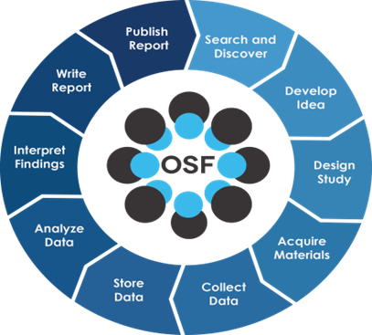

2 Repositórios da Ciência Aberta
No contexto da ciência aberta, existem diversos repositórios disponíveis, cada um com suas funções e propósitos específicos. Esses repositórios são essenciais para promover a transparência, acessibilidade e colaboração na pesquisa científica. Eles assumem um papel crucial na democratização do conhecimento e na promoção da colaboração científica. Cada qual com suas particularidades, oferecem aos pesquisadores ferramentas para armazenar, compartilhar e gerenciar dados, publicações e outros materiais de pesquisa, ou se preferir, todo o ciclo de vida da pesquisa.
- Zenodo: é um repositório gerido pelo CERN em colaboração com o projeto OpenAIRE da União Europeia. Oferece armazenamento gratuito e seguro para dados de pesquisa, com a capacidade de gerar DOIs para facilitar a citação dos dados.
- Figshare: é um repositório comercial que permite aos pesquisadores armazenar, compartilhar e descobrir dados de pesquisa. Oferece ferramentas para visualização de documentos, gráficos e outros tipos de dados diretamente no navegador, além de gerar DOIs para os projetos.
- Mendeley Data: é um repositório de dados de pesquisa da Elsevier, permitindo o armazenamento, compartilhamento e citação de conjuntos de dados. Ele suporta uma ampla gama de tipos de dados e está integrado com a plataforma de referência Mendeley.
- Harvard Dataverse: é uma rede de repositórios que permite aos pesquisadores compartilhar, armazenar e citar dados de pesquisa. Ele oferece ferramentas avançadas para a gestão de dados, incluindo controle de versões e metadados ricos, essenciais para o gerenciamento do ciclo de vida da pesquisa.
- arXiv: é um repositório de pré-impressões de artigos científicos em física, matemática, ciência da computação e outras áreas. Ele permite aos pesquisadores compartilhar seus trabalhos antes da revisão por pares, facilitando o acesso à pesquisa em estágios iniciais.
- Github: é uma plataforma de desenvolvimento colaborativo baseada em Git, amplamente utilizada por pesquisadores para compartilhar código, documentos e outros materiais de pesquisa. Ele oferece controle de versões, rastreamento de problemas e integração com outras ferramentas de desenvolvimento.
Além desses exemplos, poderíamos citar outras soluções que cumprem papeis semelhantes ou focado em certas disciplinas: Databrary, DataverseNO, DataONE, DataCite, DataHub, DataMed, DataShare, DataVerse, Dryad, EarthChem, EUDAT, European Nucleotide Archive (ENA), GenBank, Google Dataset Search, HathiTrust Research Center, ICPSR, JSTOR Data for Research, National Center for Biotechnology Information (NCBI), National Institutes of Health (NIH) Data Sharing Repositories, National Oceanographic Data Center (NODC), PLOS ONE, PubMed Central, Research Data Australia e UK Data Service; e em última instância, as redes sociais acadêmicas como Academia.edu, Google Scholar, ORCID e ResearchGate, também podem ser usadas para compartilhar e descobrir pesquisas.
A despeito de todas essas opções, vamos focar na plataforma Open Science Framework (OSF) para a realização do nosso curso. O OSF é uma plataforma de código aberto para colaboração em pesquisa, que oferece uma estrutura para conectar os fluxos de trabalho de pesquisa, desde a concepção do projeto até a publicação. O OSF é mantido pelo Center for Open Science (COS), uma organização sem fins lucrativos com sede nos Estados Unidos. O OSF é um dos principais produtos do COS e é usado por pesquisadores de todo o mundo para colaborar em projetos de pesquisa.
O OSF oferece uma série de recursos para ajudar os pesquisadores a gerenciar seus projetos de pesquisa, incluindo:
- Criar projetos de pesquisa: organizar seus estudos, incluindo metadados, datasets, materiais de pesquisa e publicações.
- Carregar e publicar dados: armazenar e compartilhar seus dados de forma segura e acessível.
- Colaboração em equipe: convidar colaboradores para participar do projeto, atribuir tarefas e acompanhar o progresso.
- Integração com outras ferramentas: conectar a armazenamentos nas nuvens (Box, DropBox, Google Drive e OneDrive), gerenciadores de referências (Zotero e Mendeley) e outros repositórios (Dataverse, Github, figsahre, etc).
O OSF tem um foco mais amplo em todo o ciclo de vida da pesquisa, desde a concepção da ideia até a publicação dos resultados. Já algumas das soluções citadas foca principalmente no compartilhamento de dados e publicações. O OSF oferece ferramentas mais robustas para colaboração em equipe, como wikis, painéis de discussão e ferramentas de gerenciamento de tarefas, e principalmente, possui uma comunidade mais ativa de pesquisadores e colaboradores.

2.1 Open Science Framework (OSF)
O material utilizado nesse módulo do curso segue de perto a proposta de Olson et al. (2022), um projeto oficial do COS que possui recursos, modelos e práticas para ajudar os pesquisadores a iniciar sua jornada OSF. Claro que ele foi adaptado para nossos fins, principalmente, em decorrência do tempo destinado ao módulo.
Você sabia que é possível executar um “forking” (criar uma cópia do projeto existente) ou “duplicate as template” (duplicar apenas a estrutura do projeto e seus componentes) de um projeto público no OSF?
Você que se interessa em iniciar seu próprio projeto OSF com um modelo, pode criar sua própria duplicata do projeto Olson et al. (2022) para começar!
Neste projeto, existem templates e recursos básicos para diversos casos de uso encontrados no OSF; coordenação de equipes de pesquisa, planejamento de gerenciamento de dados, documentos reprodutíveis e até mesmo gerenciamento de cursos.
Para os alunos que desejam uma leitura sobre o OSF na prática, indico os artigos de Sullivan, DeHaven, and Mellor (2019) e Soderberg (2018). Apesar de o leitor poder encontrar prints das telas da plataforma desatualizadas, esses dois artigos podem ser um bom começo para entender a lógica da plataforma. E off course, recomendo fortemente você dar uma olhada no suporte do OSF, onde podemos encontrar vídeos introdutórios excelentes.
Esse curso poderia ter sido concebido e gerenciado dentro do OSF, no entanto, devido a proposta de apresentarmos também o Git/Github e sua integração com documentos reprodutíveis no RStudio/Quarto (como esse que está lendo 😁), optamos por priorizar o repositório do Github. Por isso, que também nesse módulo passamos pelo Zenodo, que integra com o Github e tem a capacidade de gerar DOIs para as versões dos repositórios.
O artigo apresenta um protocolo para a implementação de práticas de Ciência Aberta (CA), com foco no uso do Open Science Framework (OSF). As principais ideias do texto são as seguintes:
A CA é um movimento que promove a transparência, a reprodutibilidade e a acessibilidade dos resultados de pesquisa;
As práticas de CA podem contribuir para a melhoria da qualidade da pesquisa científica, tornando-a mais confiável e robusta;
O OSF é uma plataforma gratuita e de código aberto que pode ser usada para implementar práticas de CA;
O protocolo apresentado no texto fornece instruções passo a passo para as seguintes práticas de CA:
Planejamento de gerenciamento de dados: O planejamento de gerenciamento de dados é essencial para garantir que os dados de pesquisa sejam armazenados, organizados e gerenciados de forma eficiente e eficaz. O OSF fornece ferramentas para ajudar os pesquisadores a planejar e implementar seus planos de gerenciamento de dados.
Pré-registro de estudos: O pré-registro de estudos é uma prática que consiste em publicar um plano de pesquisa antes de iniciar o estudo. Isso ajuda a garantir que o estudo seja realizado de forma objetiva e transparente. O OSF fornece um recurso para pré-registrar estudos.
Controle de versão: O controle de versão é uma prática que consiste em rastrear as alterações feitas em arquivos de texto. Isso ajuda a garantir que os resultados de pesquisa sejam reprodutíveis e que as alterações feitas nos dados sejam rastreáveis. O OSF fornece ferramentas para gerenciar o controle de versão de arquivos de pesquisa.
Compartilhamento de dados e materias: O compartilhamento de dados e materiais de pesquisa é uma prática importante para aumentar a transparência e a reprodutibilidade da pesquisa. O OSF fornece um repositório para compartilhar dados e materiais de pesquisa.
Publicação de pré-impressões: As pré-impressões são versões preliminares de artigos científicos que são publicadas online antes de serem revisados por pares. As pré-impressões podem ajudar a acelerar a divulgação da pesquisa e a promover o debate científico. O OSF fornece um repositório para publicar pré-impressões.
O artigo fornece informações valiosas para os pesquisadores que desejam implementar práticas de CA. O protocolo apresentado pode ser usado como um guia para implementar essas práticas de forma eficaz.